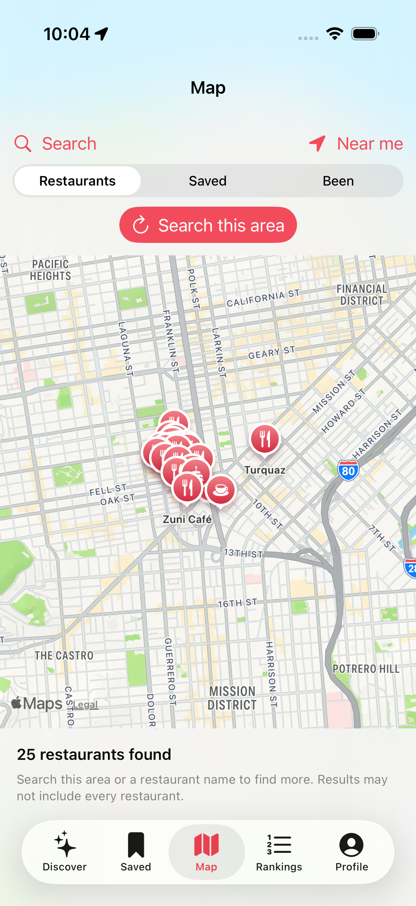
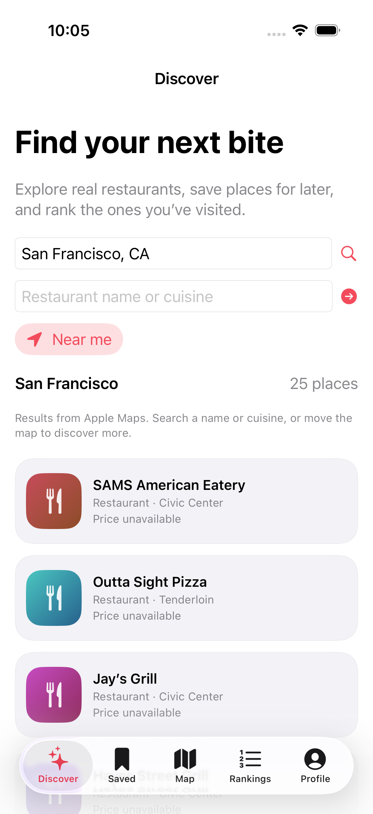
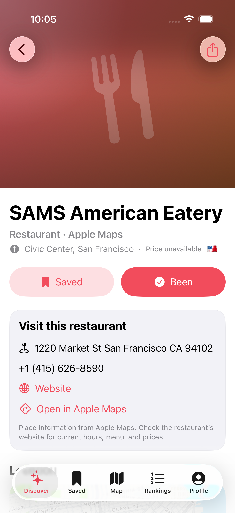
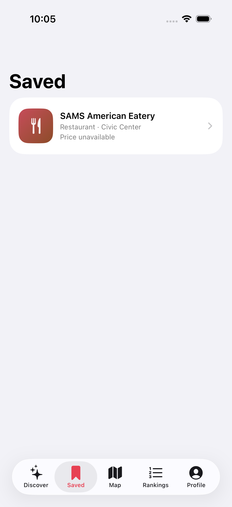

发现附近
使用当前位置寻找餐厅，也可以不授权定位，直接输入城市、街区或地址。
发现身边的真实餐厅，收藏下一家想去的店，为吃过的餐厅排名。让每一次探索，成为自己的美食记录。

Bite 已接入 Apple 地图，提供真实地点信息。个人档案从空白开始，由你的收藏、到店记录和排名逐步建立。
使用当前位置寻找餐厅，也可以不授权定位，直接输入城市、街区或地址。
拖动、缩放后搜索当前区域。点击餐厅标记即可查看和收藏，也支持地图自带的餐厅兴趣点。
收藏想去的地方，为去过的餐厅排名；没有网络时，也能查看已保存的信息和榜单。
围绕真实餐厅，以及值得记住的每一餐。
五个页面：发现、收藏、地图、排名和个人档案。当前应用界面为英文。
显示店名、地址，以及可获取的电话和网站；还可以在 Apple 地图中打开该地点。
通过几次两两比较，将去过的餐厅排入城市榜单；想法改变时可以重新排名。
按城市和国家汇总你的餐厅排名，成就进度来自你自己的使用记录。
收藏和排名在重新启动后仍然保留。已保存的餐厅详情也可离线查看。
只有点击「Near me」才会请求定位。拒绝权限后，仍可手动搜索地区。
加载、无结果、网络重试和保存失败都有明确提示，帮助你继续操作。
以下是 iPhone 模拟器中的旧金山实时搜索截图。店铺信息可能变化；彩色图案是占位插画，并非餐厅照片。

发现按地区、店名或菜系搜索。
附近地图搜索当前浏览的地图区域。

餐厅详情地址、网站和 Apple 地图链接。

收藏重新启动后，收藏依然保留。
这是网站的中文说明页；截图及当前应用界面为英文，并非中文界面样机。
Apple 地图返回的是搜索结果，不是某一区域全部餐厅的完整名录。可按店名或菜系搜索、缩小地图范围，或点击地图自带的餐厅标记来发现更多店铺。覆盖范围和准确性取决于 Apple 地图。
没有价格数据时会显示不可用。真实店铺不会展示虚构的匹配百分比、米其林评级、菜单、照片或好友动态。
账号、云同步和真实社交功能尚未实现，仍需后续开发。之前的虚构好友网络不再出现在正常应用中。
源代码已在 GitHub 提供。当前需自行构建 iOS 应用，尚未提供 App Store 下载。
Bite.xcodeproj。在模拟器中，先通过 Features → Location 设置模拟位置。真机运行需选择自己的签名团队。实时搜索和地图瓦片需要网络连接。
代码库包含 13 项核心回归测试、3 项模拟器界面测试，以及执行核心测试和模拟器构建的 CI。
git clone https://github.com/terrencelei/Bite.git
cd Bite
open Bite.xcodeproj
# macOS 15+, Xcode 16+
swift test不能保证。Apple 地图会返回一组搜索结果，Bite 显示其中位于请求区域内的全部店铺；你也可以直接打开地图自带的餐厅标记。
可以。手动搜索城市、街区或地址即可。只有主动选择 Near me 时，应用才会请求一次当前位置。
已保存的餐厅详情和排名可离线查看。新搜索、地图瓦片和外部网站需要网络。
旧原型的数据文件单独保留，不会导入新的个人档案。虚构好友和预置排名不会出现在正常应用中。
尚未接入。旧中文页面展示的生态整合只是概念设想，不是当前功能。当前应用也尚未完成中文本地化。